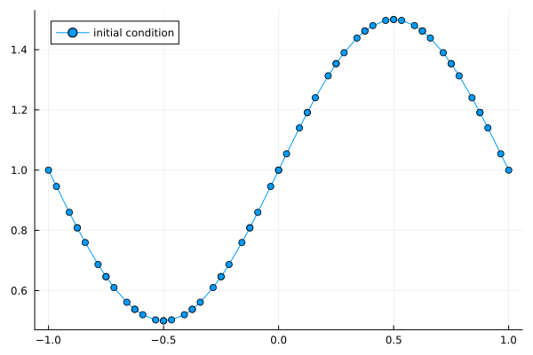
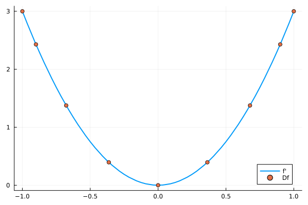
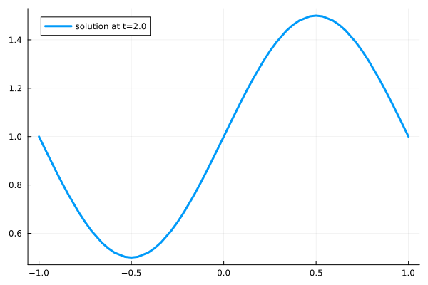
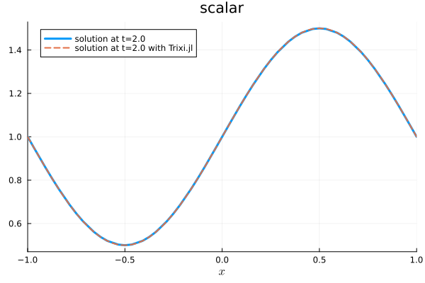

3: Introduction to DG methods


This tutorial is about how to set up a simple way to approximate the solution of a hyperbolic partial differential equation. First, we will implement a basic and naive algorithm. Then, we will use predefined features from Trixi.jl to show how you can use Trixi.jl on your own.
We will implement the scalar linear advection equation in 1D with the advection velocity $1$.
\[u_t + u_x = 0,\; \text{for} \;t\in \mathbb{R}^+, x\in\Omega=[-1,1]\]
We define the domain $\Omega$ by setting the boundaries.
coordinates_min = -1.0 # minimum coordinatecoordinates_max = 1.0 # maximum coordinate1.0We assume periodic boundaries and the following initial condition.
initial_condition_sine_wave(x) = 1.0 + 0.5 * sinpi(x)initial_condition_sine_wave (generic function with 1 method)The discontinuous Galerkin collocation spectral element method (DGSEM)
i. Discretization of the physical domain
To improve precision we want to approximate the solution on small parts of the physical domain. So, we split the domain $\Omega=[-1, 1]$ into elements $Q_l$ of length $dx$.
n_elements = 16 # number of elementsdx = (coordinates_max - coordinates_min) / n_elements # length of one element0.125To make the calculation more efficient and storing less information, we transform each element $Q_l$ with center point $x_l$ to a reference element $E=[-1, 1]$
\[Q_l=\Big[x_l-\frac{dx}{2}, x_l+\frac{dx}{2}\Big] \underset{x(\xi)}{\overset{\xi(x)}{\rightleftarrows}} [-1, 1].\]
So, for every element the transformation from the reference domain to the physical domain is defined by
\[x(\xi) = x_l + \frac{dx}{2} \xi,\; \xi\in[-1, 1]\]
Therefore,
\[\begin{align*} u &= u(x(\xi), t) \\ u_x &= u_\xi \frac{d\xi}{dx} \\[3pt] \frac{d\xi}{dx} &= (x_\xi)^{-1} = \frac{2}{dx} =: J^{-1}. \\ \end{align*}\]
Here, $J$ is the Jacobian determinant of the transformation.
Using this transformation, we can transform our equation for each element $Q_l$.
\[\frac{dx}{2} u_t^{Q_l} + u_\xi^{Q_l} = 0 \text{, for }t\in\mathbb{R}^+,\; \xi\in[-1, 1]\]
Here, $u_t^{Q_l}$ and $u_\xi^{Q_l}$ denote the time and spatial derivatives of the solution on the element $Q_l$.
ii. Polynomial approach
Now, we want to approximate the solution in each element $Q_l$ by a polynomial of degree $N$. Since we transformed the equation, we can use the same polynomial approach for the reference coordinate $\xi\in[-1, 1]$ in every physical element $Q_l$. This saves a lot of resources by reducing the amount of calculations needed and storing less information.
For DGSEM we choose Lagrange basis functions $\{l_j\}_{j=0}^N$ as our polynomial basis of degree $N$ in $[-1, 1]$. The solution in element $Q_l$ can be approximated by
\[u(x(\xi), t)\big|_{Q_l} \approx u^{Q_l}(\xi, t) = \sum_{j=0}^N u_j^{Q_l}(t) l_j(\xi)\]
with $N+1$ coefficients $\{u_j^{Q_l}\}_{j=0}^N$. By construction the Lagrange basis has some useful advantages. This basis is defined by $N+1$ nodes, which fulfill a Kronecker property at the exact same nodes. Let $\{\xi_i\}_{i=0}^N$ be these nodes.
\[l_j(\xi_i) = \delta_{i,j} = \begin{cases} 1, & \text{if } i=j \\ 0, & \text{else.} \end{cases}\]
Because of this property, the polynomial coefficients are exact the values of $u^{Q_l}$ at the nodes
\[u^{Q_l}(\xi_i, t) = \sum_{j=0}^N u_j^{Q_l}(t) \underbrace{l_j(\xi_i)}_{=\delta_{ij}} = u_i^{Q_l}(t).\]
Next, we want to select the nodes $\{\xi_i\}_{i=0}^N$, which we use for the construction of the Lagrange polynomials. We choose the $N+1$ Gauss-Lobatto nodes, which are used for the Gaussian-Lobatto quadrature. These always contain the boundary points at $-1$ and $+1$ and are well suited as interpolation nodes. The corresponding weights will be referred to as $\{w_j\}_{j=0}^N$. In Trixi.jl the basis with Lagrange polynomials on Gauss-Lobatto nodes is already defined.
using Trixipolydeg = 3 #= polynomial degree = N =#basis = LobattoLegendreBasis(polydeg)LobattoLegendreBasis{Float64} with polynomials of degree 3The Gauss-Lobatto nodes are
nodes = basis.nodes4-element SVector{4, Float64} with indices SOneTo(4):
-1.0
-0.4472135954999579
0.4472135954999579
1.0with the corresponding weights
weights = basis.weights4-element SVector{4, Float64} with indices SOneTo(4):
0.16666666666666666
0.8333333333333334
0.8333333333333334
0.16666666666666666To illustrate how you can integrate using numerical quadrature with this Legendre-Gauss-Lobatto nodes, we give an example for $f(x)=x^3$. Since $f$ is of degree $3$, a polynomial interpolation with $N=3$ is exact. Therefore, the integral on $[-1, 1]$ can be calculated by
\[\begin{align*} \int_{-1}^1 f(x) dx &= \int_{-1}^1 \Big( \sum_{j=0}^3 f(\xi_j)l_j(x) \Big) dx = \sum_{j=0}^3 f(\xi_j) \int_{-1}^1 l_j(x)dx \\ &=: \sum_{j=0}^3 f(\xi_j) w_j = \sum_{j=0}^3 \xi_j^3 w_j \end{align*}\]
Let's use our nodes and weights for $N=3$ and plug in
integral = sum(nodes .^ 3 .* weights)0.0Using this polynomial approach leads to the equation
\[\frac{dx}{2} \dot{u}^{Q_l}(\xi, t) + u^{Q_l}(\xi, t)' = 0\]
with $\dot{u}=\frac{\partial}{\partial t}u$ and $u'=\frac{\partial}{\partial x}u$. To approximate the solution, we need to get the polynomial coefficients $\{u_j^{Q_l}\}_{j=0}^N$ for every element $Q_l$.
After defining all nodes, we can implement the spatial coordinate $x$ and its initial value $u0 = u(t_0)$ for every node.
x = Matrix{Float64}(undef, length(nodes), n_elements)for element in 1:n_elements x_l = coordinates_min + (element - 1) * dx + dx / 2 for i in eachindex(nodes) ξ = nodes[i] # nodes in [-1, 1] x[i, element] = x_l + dx / 2 * ξ endendu0 = initial_condition_sine_wave.(x)4×16 Matrix{Float64}:
1.0 0.808658 0.646447 … 1.5 1.46194 1.35355 1.19134
0.945837 0.759744 0.610228 1.49706 1.43849 1.31317 1.14018
0.859825 0.686826 0.561506 1.47995 1.38977 1.24026 1.05416
0.808658 0.646447 0.53806 1.46194 1.35355 1.19134 1.0To have a look at the initial sinus curve, we plot it.
using Plotsplot(vec(x), vec(u0), label = "initial condition", legend = :topleft, markershape = :circle)
iii. Variational formulation
After defining the equation and initial condition, we want to implement an algorithm to approximate the solution.
From now on, we only write $u$ instead of $u^{Q_l}$ for simplicity, but consider that all the following calculation only concern one element. Multiplying the new equation with the smooth Lagrange polynomials $\{l_i\}_{i=0}^N$ (test functions) and integrating over the reference element $E=[-1,1]$, we get the variational formulation of our transformed partial differential equation for $i=0,...,N$:
\[\begin{align*} \int_{-1}^1 \Big( \frac{dx}{2} \dot{u}(\xi, t) + u'(\xi, t) \Big) l_i(\xi)d\xi &= \underbrace{\frac{dx}{2} \int_{-1}^1 \dot{u}(\xi, t) l_i(\xi)d\xi}_{\text{Term I}} + \underbrace{\int_{-1}^1 u'(\xi, t) l_i(\xi)d\xi}_{\text{Term II}} = 0 \end{align*}\]
We deal with the two terms separately. We write $\int_{-1, N}^1 \;\cdot\; d\xi$ for the approximation of the integral using numerical quadrature with $N+1$ basis points. We use the Gauss-Lobatto nodes again. The numerical scalar product $\langle\cdot, \cdot\rangle_N$ is defined by $\langle f, g\rangle_N := \int_{-1, N}^1 f(\xi) g(\xi) d\xi$.
Term I:
In the following calculation we approximate the integral numerically with quadrature on the Gauss-Lobatto nodes $\{\xi_i\}_{i=0}^N$ and then use the Kronecker property of the Lagrange polynomials. This approach of using the same nodes for the interpolation and quadrature is called collocation.
\[\begin{align*} \frac{dx}{2} \int_{-1}^1 \dot{u}(\xi, t) l_i(\xi)d\xi &\approx \frac{dx}{2} \int_{-1, N}^1 \dot{u}(\xi, t) l_i(\xi)d\xi \\ &= \frac{dx}{2} \sum_{k=0}^N \underbrace{\dot{u}(\xi_k, t)}_{=\dot{u}_k(t)} \underbrace{l_i(\xi_k)}_{=\delta_{k,i}}w_k \\ &= \frac{dx}{2} \dot{u}_i(t) w_i \end{align*}\]
We define the Legendre-Gauss-Lobatto (LGL) mass matrix $M$ and by the Kronecker property follows:
\[M_{ij} = \langle l_j, l_i\rangle_N = \delta_{ij} w_j,\; i,j=0,...,N.\]
using LinearAlgebraM = diagm(weights)4×4 StaticArraysCore.SMatrix{4, 4, Float64, 16} with indices SOneTo(4)×SOneTo(4):
0.166667 0.0 0.0 0.0
0.0 0.833333 0.0 0.0
0.0 0.0 0.833333 0.0
0.0 0.0 0.0 0.166667Now, we can write the integral with this new matrix.
\[\frac{dx}{2} \int_{-1, N}^1 \dot{u}(\xi, t) \underline{l}(\xi)d\xi = \frac{dx}{2} M \underline{\dot{u}}(t),\]
where $\underline{\dot{u}} = (\dot{u}_0, \dots, \dot{u}_N)^T$ and $\underline{l} = (l_0, \dots, l_N)^T$ respectively.
Note: Since the LGL quadrature with $N+1$ nodes is exact up to functions of degree $2N-1$ and $\dot{u}(\xi, t) l_i(\xi)$ is of degree $2N$, in general the following holds
\[\int_{-1}^1 \dot{u}(\xi, t) l_i(\xi) d\xi \neq \int_{-1, N}^1 \dot{u}(\xi, t) l_i(\xi) d\xi.\]
With an exact integration the mass matrix would be dense. Choosing numerical integrating and quadrature with the exact same nodes (collocation) leads to the sparse and diagonal mass matrix $M$. This is called mass lumping and has the big advantage of an easy inversion of the matrix.
Term II:
We use spatial partial integration for the second term:
\[\int_{-1}^1 u'(\xi, t) l_i(\xi) d\xi = [u l_i]_{-1}^1 - \int_{-1}^1 u l_i'd\xi\]
The resulting integral can be solved exactly with LGL quadrature since the polynomial is now of degree $2N-1$.
Again, we split the calculation in two steps.
Surface term
As mentioned before, we approximate the solution with a polynomial in every element. Therefore, in general the value of this approximation at the interfaces between two elements is not unique. To solve this problem we introduce the idea of the numerical flux $u^*$, which will give an exact value at the interfaces. One of many different approaches and definitions for the calculation of the numerical flux we will deal with in 4. Numerical flux.
\[[u l_i]_{-1}^1 = u^*\big|^1 l_i(+1) - u^*\big|_{-1} l_i(-1)\]
Since the Gauss-Lobatto nodes contain the element boundaries $-1$ and $+1$, we can use the Kronecker property of $l_i$ for the calculation of $l_i(-1)$ and $l_i(+1)$.
\[[u \underline{l}]_{-1}^1 = u^*\big|^1 \left(\begin{array}{c} 0 \\ \vdots \\ 0 \\ 1 \end{array}\right) - u^*\big|_{-1} \left(\begin{array}{c} 1 \\ 0 \\ \vdots \\ 0\end{array}\right) = B \underline{u}^*(t)\]
with the boundary matrix
\[B = \begin{pmatrix} -1 & 0 & \cdots & 0\\ 0 & 0 & \cdots & 0\\ \vdots & \vdots & 0 & 0\\ 0 & \cdots & 0 & 1 \end{pmatrix} \qquad\text{and}\qquad \underline{u}^*(t) = \left(\begin{array}{c} u^*\big|_{-1} \\ 0 \\ \vdots \\ 0 \\ u^*\big|^1\end{array}\right).\]
B = diagm([-1; zeros(polydeg - 1); 1])4×4 Matrix{Float64}:
-1.0 0.0 0.0 0.0
0.0 0.0 0.0 0.0
0.0 0.0 0.0 0.0
0.0 0.0 0.0 1.0Volume term
As mentioned before, the new integral can be solved exact since the function inside is of degree $2N-1$.
\[- \int_{-1}^1 u l_i'd\xi = - \int_{-1, N}^1 u l_i' d\xi = - \sum_{k=0}^N u(\xi_k, t) l_i'(\xi_k) w_k = - \sum_{k=0}^N u_k(t) D_{ki} w_k\]
where $D$ is the derivative matrix defined by $D_{ki} = l_i'(\xi_k)$ for $i,k=0,...,N$.
D = basis.derivative_matrix4×4 Matrix{Float64}:
-3.0 4.04508 -1.54508 0.5
-0.809017 0.0 1.11803 -0.309017
0.309017 -1.11803 0.0 0.809017
-0.5 1.54508 -4.04508 3.0To show why this matrix is called the derivative matrix, we go back to our example $f(x)=x^3$. We calculate the derivation of $f$ at the Gauss-Lobatto nodes $\{\xi_k\}_{k=0}^N$ with $N=8$.
\[f'|_{x=\xi_k} = \Big( \sum_{j=0}^8 f(\xi_j) l_j(x) \Big)'|_{x=\xi_k} = \sum_{j=0}^8 f(\xi_j) l_j'(\xi_k) = \sum_{j=0}^8 f(\xi_j) D_{kj}\]
for $k=0,...,N$ and therefore, $\underline{f}' = D \underline{f}$.
basis_N8 = LobattoLegendreBasis(8)plot(vec(x), x -> 3 * x^2, label = "f'", lw = 2)scatter!(basis_N8.nodes, basis_N8.derivative_matrix * basis_N8.nodes .^ 3, label = "Df", lw = 3)
Combining the volume term for every $i=0,...,N$ results in
\[\int_{-1}^1 u \underline{l'} d\xi = - D^T M \underline{u}(t)\]
Putting all parts together we get the following equation for the element $Q_l$
\[\frac{dx}{2} M \underline{\dot{u}}(t) = - B \underline{u}^*(t) + D^T M \underline{u}(t)\]
or equivalent
\[\underline{\dot{u}}^{Q_l}(t) = \frac{2}{dx} \Big[ - M^{-1} B \underline{u}^{{Q_l}^*}(t) + M^{-1} D^T M \underline{u}^{Q_l}(t)\Big].\]
This is called the weak form of the DGSEM.
Note: For every element $Q_l$ we get a system of $N+1$ ordinary differential equations to calculate $N+1$ coefficients. Since the numerical flux $u^*$ is depending on extern values at the interfaces, the equation systems of adjacent elements are weakly linked.
iv. Numerical flux
As mentioned above, we still have to handle the problem of different values at the same point at the interfaces. This happens with the ideas of the numerical flux $f^*(u)=u^*$. The role of $f^*$ might seem minor in this simple example, but is important for more complicated problems. There are two values at the same spatial coordinate. Let's say we are looking at the interface between the elements $Q_l$ and $Q_{l+1}$, while both elements got $N+1$ nodes as defined before. We call the first value of the right element $u_R=u_0^{Q_{l+1}}$ and the last one of the left element $u_L=u_N^{Q_l}$. So, for the value of the numerical flux on that interface the following holds
\[u^* = u^*(u_L, u_R).\]
These values are interpreted as start values of a so-called Riemann problem. There are many different (approximate) Riemann solvers available and useful for different problems. We will use the local Lax-Friedrichs flux.
surface_flux = flux_lax_friedrichsFluxLaxFriedrichs(max_abs_speed)The only missing ingredient is the flux calculation at the boundaries $-1$ and $+1$.
\[u^{{Q_{first}}^*}\big|_{-1} = u^{{Q_{first}}^*}\big|_{-1}(u^{bound}(-1), u_R) \quad\text{and}\quad u^{{Q_{last}}^*}\big|^1 = u^{{Q_{last}}^*}\big|^1(u_L, u^{bound}(1))\]
The boundaries are periodic, which means that the last value of the last element $u^{Q_{last}}_N$ is used as $u_L$ at the first interface and accordingly for the other boundary.
Now, we implement a function, that calculates $\underline{\dot{u}}^{Q_l}$ for the given matrices, $\underline{u}$ and $\underline{u}^*$.
function rhs!(du, u, x, t) # Reset du and flux matrix du .= zero(eltype(du)) flux_numerical = copy(du) # Calculate interface and boundary fluxes, $u^* = (u^*|_{-1}, 0, ..., 0, u^*|^1)^T$ # Since we use the flux Lax-Friedrichs from Trixi.jl, we have to pass some extra arguments. # Trixi.jl needs the equation we are dealing with and an additional `1`, that indicates the # first coordinate direction. equations = LinearScalarAdvectionEquation1D(1.0) for element in 2:(n_elements - 1) # left interface flux_numerical[1, element] = surface_flux(u[end, element - 1], u[1, element], 1, equations) flux_numerical[end, element - 1] = flux_numerical[1, element] # right interface flux_numerical[end, element] = surface_flux(u[end, element], u[1, element + 1], 1, equations) flux_numerical[1, element + 1] = flux_numerical[end, element] end # boundary flux flux_numerical[1, 1] = surface_flux(u[end, end], u[1, 1], 1, equations) flux_numerical[end, end] = flux_numerical[1, 1] # Calculate surface integrals, $- M^{-1} * B * u^*$ for element in 1:n_elements du[:, element] -= (M \ B) * flux_numerical[:, element] end # Calculate volume integral, $+ M^{-1} * D^T * M * u$ for element in 1:n_elements flux = u[:, element] du[:, element] += (M \ transpose(D)) * M * flux end # Apply Jacobian from mapping to reference element for element in 1:n_elements du[:, element] *= 2 / dx end return nothingendrhs! (generic function with 1 method)Combining all definitions and the function that calculates the right-hand side, we define the ODE and solve it until t=2 with OrdinaryDiffEq's solve function and the Runge-Kutta method RDPK3SpFSAL49(), which is optimized for discontinuous Galerkin methods and hyperbolic PDEs. We set some common error tolerances abstol=1.0e-6, reltol=1.0e-6 and pass save_everystep=false to avoid saving intermediate solution vectors in memory.
using OrdinaryDiffEqLowStorageRKtspan = (0.0, 2.0)ode = ODEProblem(rhs!, u0, tspan, x)sol = solve(ode, RDPK3SpFSAL49(); abstol = 1.0e-6, reltol = 1.0e-6, ode_default_options()...)plot(vec(x), vec(sol.u[end]), label = "solution at t=$(tspan[2])", legend = :topleft, lw = 3)
Alternative Implementation based on Trixi.jl
Now, we implement the same example. But this time, we directly use the functionality that Trixi.jl provides.
using Trixi, OrdinaryDiffEqLowStorageRK, PlotsFirst, define the equation with a advection_velocity of 1.
advection_velocity = 1.0equations = LinearScalarAdvectionEquation1D(advection_velocity)┌──────────────────────────────────────────────────────────────────────────────────────────────────┐
│ LinearScalarAdvectionEquation1D │
│ ═══════════════════════════════ │
│ #variables: ……………………………………………………………… 1 │
│ │ variable 1: ………………………………………………………… scalar │
└──────────────────────────────────────────────────────────────────────────────────────────────────┘Then, create a DG solver with polynomial degree = 3 and (local) Lax-Friedrichs/Rusanov flux as surface flux. The implementation of the basis and the numerical flux is now already done.
solver = DGSEM(polydeg = 3, surface_flux = flux_lax_friedrichs)┌──────────────────────────────────────────────────────────────────────────────────────────────────┐
│ DG{Float64} │
│ ═══════════ │
│ basis: …………………………………………………………………………… LobattoLegendreBasis{Float64}(polydeg=3) │
│ mortar: ………………………………………………………………………… LobattoLegendreMortarL2{Float64}(polydeg=3) │
│ surface integral: ……………………………………………… SurfaceIntegralWeakForm │
│ │ surface flux: …………………………………………………… FluxLaxFriedrichs(max_abs_speed) │
│ volume integral: ………………………………………………… VolumeIntegralWeakForm │
└──────────────────────────────────────────────────────────────────────────────────────────────────┘We will now create a mesh with 16 elements for the physical domain [-1, 1] with periodic boundaries. We use Trixi.jl's standard mesh TreeMesh. Since it's limited to hypercube domains, we choose 2^4=16 elements. The mesh type supports Adaptive Mesh Refinement (AMR).
coordinates_min = -1.0 # minimum coordinatecoordinates_max = 1.0 # maximum coordinatemesh = TreeMesh(coordinates_min, coordinates_max, initial_refinement_level = 4, # number of elements = 2^4 periodicity = true)┌──────────────────────────────────────────────────────────────────────────────────────────────────┐
│ TreeMesh{1, Trixi.SerialTree{1, Float64}} │
│ ═════════════════════════════════════════ │
│ center: ………………………………………………………………………… [0.0] │
│ length: ………………………………………………………………………… 2.0 │
│ periodicity: …………………………………………………………… (true,) │
│ current #cells: …………………………………………………… 31 │
│ #leaf-cells: …………………………………………………………… 16 │
│ current capacity: ……………………………………………… 31 │
└──────────────────────────────────────────────────────────────────────────────────────────────────┘A semidiscretization collects data structures and functions for the spatial discretization. In Trixi.jl, an initial condition has the following parameter structure and is of the type SVector.
function initial_condition_sine_wave(x, t, equations) return SVector(1.0 + 0.5 * sin(pi * sum(x - equations.advection_velocity * t)))endsemi = SemidiscretizationHyperbolic(mesh, equations, initial_condition_sine_wave, solver; boundary_conditions = boundary_condition_periodic)┌──────────────────────────────────────────────────────────────────────────────────────────────────┐
│ SemidiscretizationHyperbolic │
│ ════════════════════════════ │
│ #spatial dimensions: ……………………………………… 1 │
│ mesh: ……………………………………………………………………………… TreeMesh{1, Trixi.SerialTree{1, Float64}} with length 31 │
│ equations: ………………………………………………………………… LinearScalarAdvectionEquation1D │
│ initial condition: …………………………………………… initial_condition_sine_wave │
│ boundary conditions: ……………………………………… Trixi.BoundaryConditionPeriodic │
│ source terms: ………………………………………………………… nothing │
│ solver: ………………………………………………………………………… DG │
│ total #DOFs per field: ………………………………… 64 │
└──────────────────────────────────────────────────────────────────────────────────────────────────┘Again, combining all definitions and the function that calculates the right-hand side, we define the ODE and solve it until t=2 with OrdinaryDiffEq's solve function and the Runge-Kutta method RDPK3SpFSAL49().
tspan = (0.0, 2.0)ode_trixi = semidiscretize(semi, tspan)sol_trixi = solve(ode_trixi, RDPK3SpFSAL49(); abstol = 1.0e-6, reltol = 1.0e-6, ode_default_options()...);We add a plot of the new approximated solution to the one calculated before.
plot!(sol_trixi, label = "solution at t=$(tspan[2]) with Trixi.jl", legend = :topleft, linestyle = :dash, lw = 2)
Summary of the code
To sum up, here is the complete code that we used.
Raw implementation
# basis: Legendre-Gauss-Lobattousing OrdinaryDiffEqLowStorageRKusing Trixi, LinearAlgebra, Plotspolydeg = 3 #= polynomial degree =#basis = LobattoLegendreBasis(polydeg)nodes = basis.nodes # Gauss-Lobatto nodes in [-1, 1]D = basis.derivative_matrixM = diagm(basis.weights) # mass matrixB = diagm([-1; zeros(polydeg - 1); 1])# meshcoordinates_min = -1.0 # minimum coordinatecoordinates_max = 1.0 # maximum coordinaten_elements = 16 # number of elementsdx = (coordinates_max - coordinates_min) / n_elements # length of one elementx = Matrix{Float64}(undef, length(nodes), n_elements)for element in 1:n_elements x_l = -1 + (element - 1) * dx + dx / 2 for i in eachindex(nodes) # basis points in [-1, 1] ξ = nodes[i] x[i, element] = x_l + dx / 2 * ξ endend# initial conditioninitial_condition_sine_wave(x) = 1.0 + 0.5 * sinpi(x)u0 = initial_condition_sine_wave.(x)plot(vec(x), vec(u0), label = "initial condition", legend = :topleft, markershape = :circle)# flux Lax-Friedrichssurface_flux = flux_lax_friedrichs# rhs! methodfunction rhs!(du, u, x, t) # reset du du .= zero(eltype(du)) flux_numerical = copy(du) # calculate interface and boundary fluxes equations = LinearScalarAdvectionEquation1D(1.0) for element in 2:(n_elements - 1) # left interface flux_numerical[1, element] = surface_flux(u[end, element - 1], u[1, element], 1, equations) flux_numerical[end, element - 1] = flux_numerical[1, element] # right interface flux_numerical[end, element] = surface_flux(u[end, element], u[1, element + 1], 1, equations) flux_numerical[1, element + 1] = flux_numerical[end, element] end # boundary flux flux_numerical[1, 1] = surface_flux(u[end, end], u[1, 1], 1, equations) flux_numerical[end, end] = flux_numerical[1, 1] # calculate surface integrals for element in 1:n_elements du[:, element] -= (M \ B) * flux_numerical[:, element] end # calculate volume integral for element in 1:n_elements flux = u[:, element] du[:, element] += (M \ transpose(D)) * M * flux end # apply Jacobian from mapping to reference element for element in 1:n_elements du[:, element] *= 2 / dx end return nothingend# create ODE problemtspan = (0.0, 2.0)ode = ODEProblem(rhs!, u0, tspan, x)# solvesol = solve(ode, RDPK3SpFSAL49(); abstol = 1.0e-6, reltol = 1.0e-6, ode_default_options()...)plot(vec(x), vec(sol.u[end]), label = "solution at t=$(tspan[2])", legend = :topleft, lw = 3)Alternative Implementation based on Trixi.jl
using Trixi, OrdinaryDiffEqLowStorageRK, Plots# equation with a advection_velocity of `1`.advection_velocity = 1.0equations = LinearScalarAdvectionEquation1D(advection_velocity)# create DG solver with flux lax friedrichs and LGL basissolver = DGSEM(polydeg = 3, surface_flux = flux_lax_friedrichs)# distretize domain with `TreeMesh`coordinates_min = -1.0 # minimum coordinatecoordinates_max = 1.0 # maximum coordinatemesh = TreeMesh(coordinates_min, coordinates_max, initial_refinement_level = 4, # number of elements = 2^4 periodicity = true)# create initial condition and semidiscretizationfunction initial_condition_sine_wave(x, t, equations) return SVector(1.0 + 0.5 * sin(pi * sum(x - equations.advection_velocity * t)))endsemi = SemidiscretizationHyperbolic(mesh, equations, initial_condition_sine_wave, solver; boundary_conditions = boundary_condition_periodic)# solvetspan = (0.0, 2.0)ode_trixi = semidiscretize(semi, tspan)sol_trixi = solve(ode_trixi, RDPK3SpFSAL49(); abstol = 1.0e-6, reltol = 1.0e-6, ode_default_options()...);plot!(sol_trixi, label = "solution at t=$(tspan[2]) with Trixi.jl", legend = :topleft, linestyle = :dash, lw = 2)Package versions
These results were obtained using the following versions.
using InteractiveUtilsversioninfo()using PkgPkg.status(["Trixi", "OrdinaryDiffEqLowStorageRK", "Plots"], mode = PKGMODE_MANIFEST)Julia Version 1.10.12
Commit d93beab124c (2026-08-15 10:29 UTC)
Build Info:
Official https://julialang.org/ release
Platform Info:
OS: Linux (x86_64-linux-gnu)
CPU: 4 × INTEL(R) XEON(R) PLATINUM 8573C
WORD_SIZE: 64
LIBM: libopenlibm
LLVM: libLLVM-15.0.7 (ORCJIT, icelake-client)
Threads: 1 default, 0 interactive, 1 GC (on 4 virtual cores)
Environment:
JULIA_PKG_SERVER_REGISTRY_PREFERENCE = eager
Status `~/work/Trixi.jl/Trixi.jl/docs/Manifest.toml`
[b0944070] OrdinaryDiffEqLowStorageRK v3.4.0
[91a5bcdd] Plots v1.41.7
[a7f1ee26] Trixi v0.17.6-DEV `~/work/Trixi.jl/Trixi.jl`This page was generated using Literate.jl.